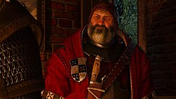

Oficjalna okładka gry (2015)
Oficjalna okładka gry (2015)
Wiedźmin 3: Dziki Gon to action-RPG z otwartym światem od CD PROJEKT RED. Gra z 2015 roku wciąż zachwyca.
Główny bohater, Geralt z Rivii, szuka córki Ciri ściganej przez Dziką Gon. Fabuła to ponad 100 godzin epickich przygód.

Jedena z wielu postaci, które spotykamy
Świat gry obejmuje bagna Velen, Novigrad i Skellige. Wybory gracza prowadzą do 36 różnych zakończeń.
DLC Serce z Kamienia i Krew i Wino dodają nowe historie. "Krew i Wino" to bajkowa kraina Toussaint.
| Rok | Nagroda / Źródło | Wynik |
|---|---|---|
| 2015 | Gra Roku - The Game Awards | Wygrana |
| 2015 | Gra Roku - Golden Joystick | Wygrana |
| 2016 | Najlepsza RPG dekady | Wygrana |
| Metacritic (PC) | 93/100 | |
| Użytkownicy Metacritic | 9.3/10 |